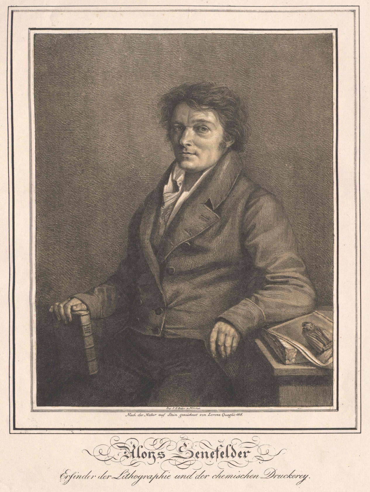
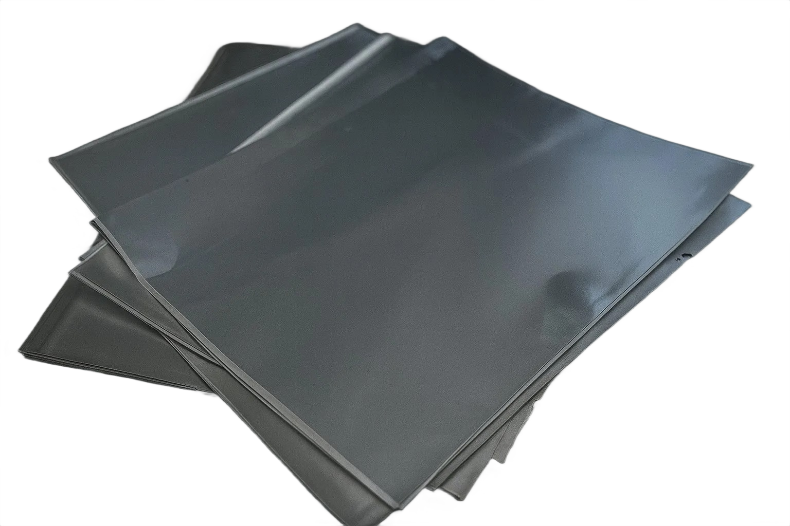
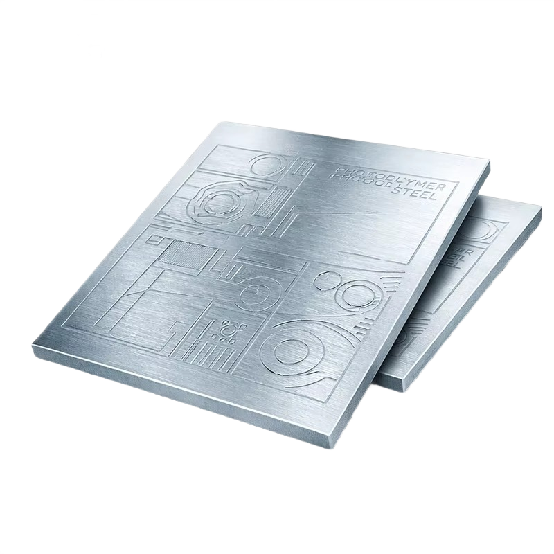
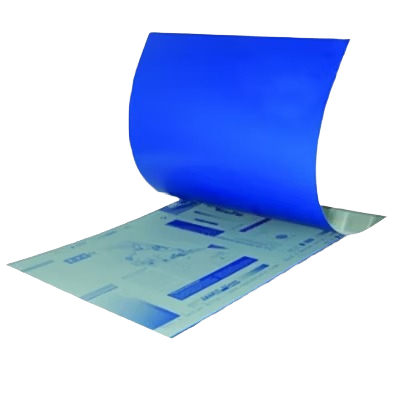
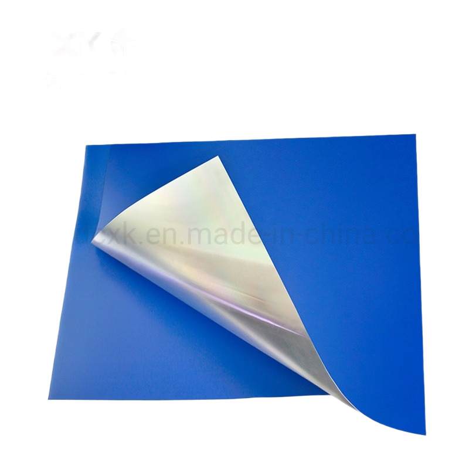
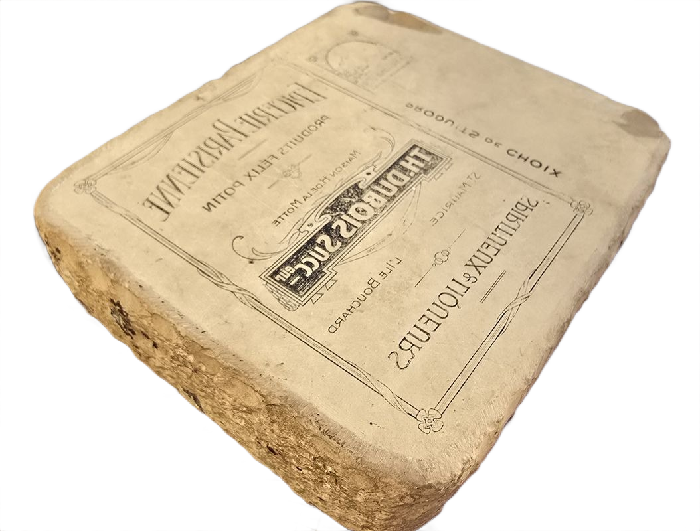
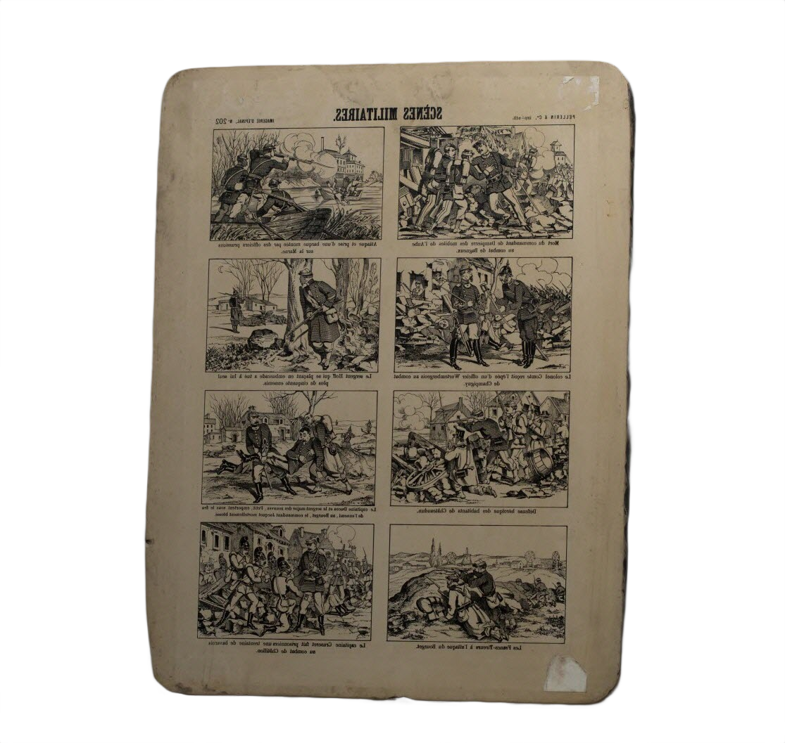
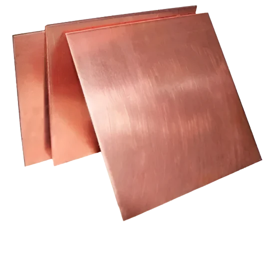
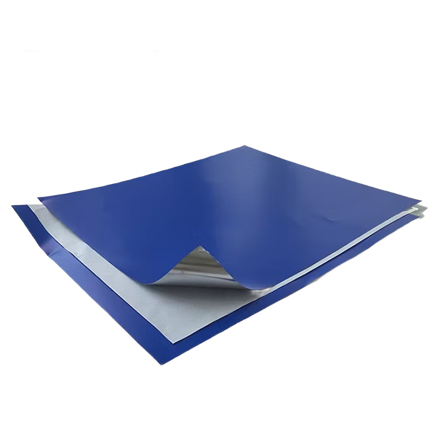
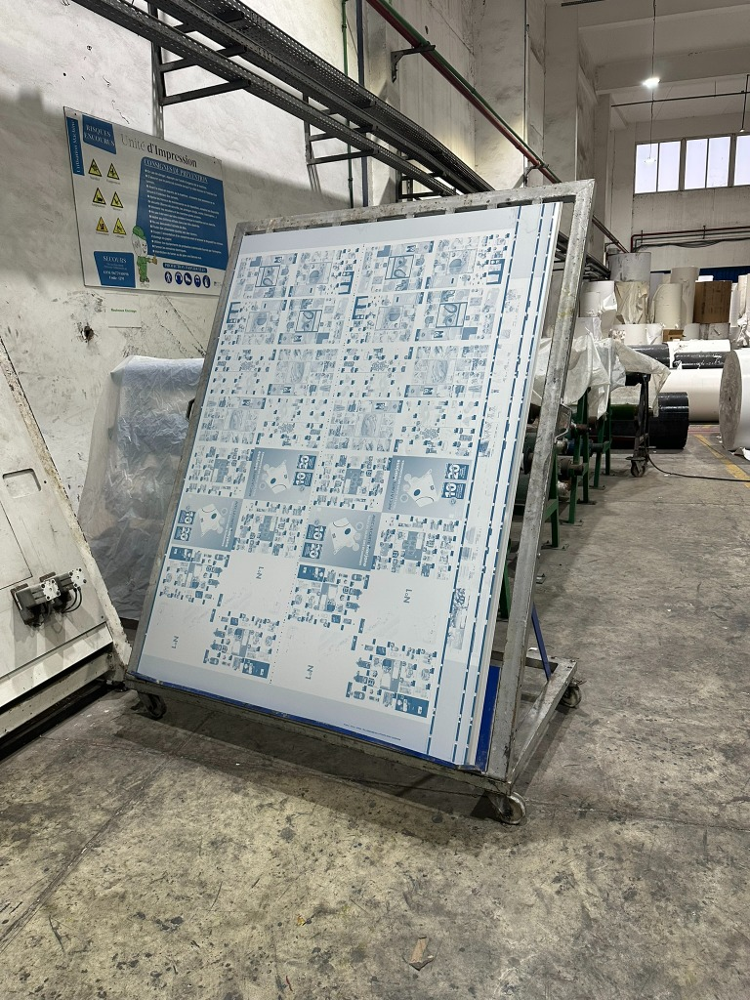

Architecture des Supports, Traitements de Surface & Photochimie des Formes Imprimantes









Aluminium anodisé • 50–250K ex.
Chrome + Laiton • Tirages élevés
Multi-couches • 1 à 2 millions ex.

Modification de surface pour retenir l'eau et ancrer la couche photosensible.
Garantit la stabilité du film de mouillage et la netteté du point d'impression.
Opération mécanique, chimique ou électrochimique créant une micro-rugosité uniforme sur l'aluminium.
Elle multiplie la surface développée pour fixer durablement l'eau et assurer l'ancrage de la couche photosensible.
Bouclier céramique ultra-dur contre l'usure mécanique et l'oxydation.
Retient 2× moins d'eau que l'aluminium ; dédiée à l'impression sur métal.
Résine organique photosensible à base de sels de diazonium déposée en film mince sur l'aluminium anodisé.
Naturellement oléophile et insoluble, elle se décompose sous rayonnement UV en libérant de l'azote gazeux (N₂) pour devenir soluble dans le révélateur.
L'exposition aux UV à travers un film positif solubilise les zones éclairées et protège les zones masquées.
Le révélateur élimine la couche insolée pour découvrir l'aluminium hydrophile (non-imprimant), tandis que la couche protégée reste intacte et oléophile (imprimante).
Formulation synthétique composée de monomères, d'oligomères et de photoamorceurs réactifs déposée sur l'aluminium anodisé.
Sous l'action des rayons UV, une réticulation tridimensionnelle soude les monomères en un réseau polymère extrêmement dur et totalement insoluble (> 1 million de tirages).
L'exposition aux UV à travers un film négatif durcit par réticulation les zones éclairées et laisse solubles les zones masquées.
Le révélateur dissout les zones non-insolées pour découvrir l'aluminium hydrophile (non-imprimant), tandis que le polymère réticulé demeure insoluble et oléophile (imprimant).
Volume d'exemplaires prévu (court < 50k, moyen 250k, ou long > 1M) déterminant le choix entre monométallique et polymétallique.
Précision du point requise (133 à 300 lpi) imposant un grainage électrochimique fin et une couche positive haute résolution.
Couche diazoïque positive (80 %) pour la souplesse en labeur, ou photopolymère négative (20 %) pour la rapidité en rotative.
Compatibilité géométrique avec le cylindre porte-plaque (0,15 à 0,40 mm) et résistance à la traction de calage.
Rapidité de copie, stabilité chimique du révélateur et aptitude à la cuisson thermique (240 °C) contre les encres UV.
Arbitrage entre le coût d'achat de la plaque, la vitesse de mise en route sur presse et la réduction de la gâche papier.